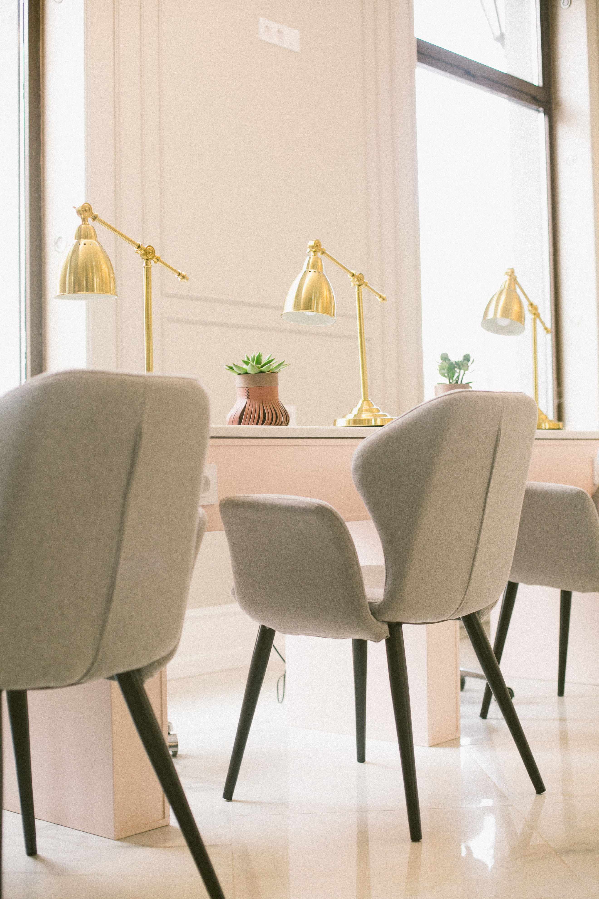
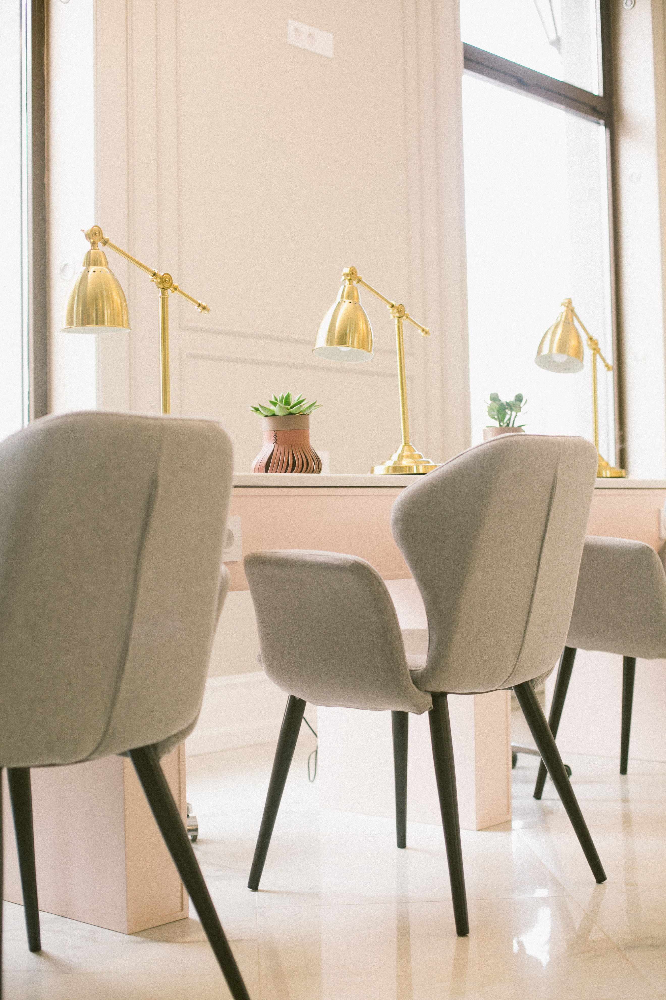
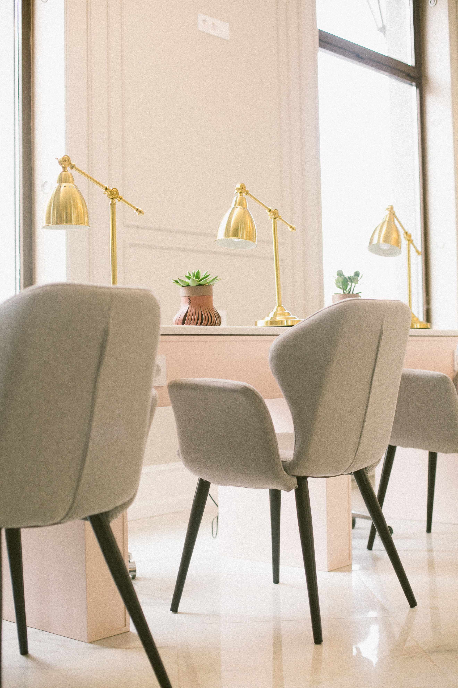
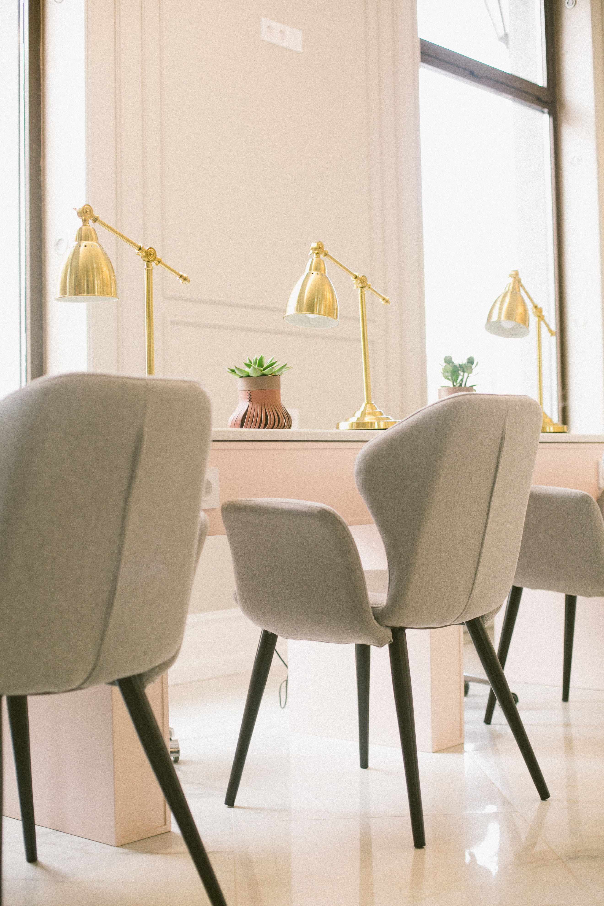
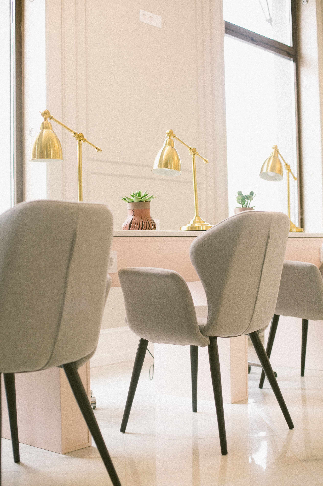
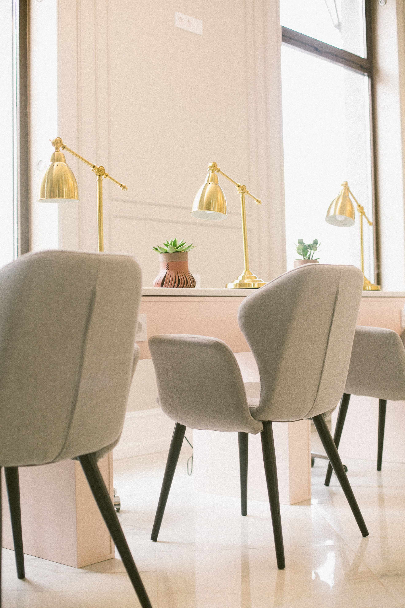

Furniture refers to movable objects intended to support various human activities such as seating (e.g., chairs, stools, and sofas), eating (tables), and sleeping (e.g., beds). Furniture is also used to hold objects at a convenient height for work (as horizontal surfaces above the ground, such as tables and desks), or to store things (e.g., cupboards and shelves).
Furniture can be a product of design and is considered a form of decorative art. In addition to furniture's functional role, it can serve a symbolic or religious purpose. It can be made from many materials, including metal, plastic, and wood. Furniture can be made using a variety of woodworking joints which often reflect the local culture.
Interior design is the art and science of enhancing the interior of a building to achieve a healthier and more aesthetically pleasing environment for the people using the space. An interior designer is someone who plans, researches, coordinates, and manages such enhancement projects.
Interior design is a multifaceted profession that includes conceptual development, space planning, site inspections, programming, research, communicating with the stakeholders of a project, construction management, and execution of the design.